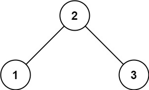
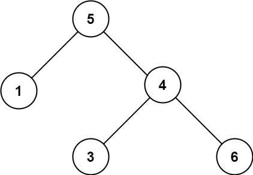

98. 验证二叉搜索树
题目与约束
给你一个二叉树的根节点 root ，判断其是否是一个有效的二叉搜索树。
有效 二叉搜索树定义如下：
- 节点的左子树只包含严格小于当前节点的数。
- 节点的右子树只包含 严格大于 当前节点的数。
- 所有左子树和右子树自身必须也是二叉搜索树。
示例 1：

输入：root = [2,1,3]
输出：true
示例 2：

输入：root = [5,1,4,null,null,3,6]
输出：false
解释：根节点的值是 5 ，但是右子节点的值是 4 。
提示：
- 树中节点数目范围在
[1, 104]内 -231 <= Node.val <= 231 - 1
核心不变量
约束作用于整棵子树，不只是父子节点。
解法 1：上下界递归版
思路推导
-
直觉与致命陷阱（只顾眼前人）：
很多人的第一直觉是写出这样的代码：
if (node.left != null && node.left.val >= node.val) return false;痛点：这只能保证局部合法。 假设有这样一棵树：根节点是
5，右孩子是6，右孩子的左孩子是3。如果只看局部，
3 < 6没问题，5 < 6也没问题。但这棵树是错的！因为3在根节点5的右子树里，它本应该大于5才对！ -
破局思路 A（天降紧箍咒：上下界透传法）：
为了防止底下的小弟“越界”，我们在递归往下走的时候，必须带着上限和下限。
- 对于根节点，它没有限制，范围是
(-∞, +∞)。 - 当我往左走时，左孩子必须比我小，所以它的上限变成了我的值：范围缩小为
(-∞, root.val)。 - 当我往右走时，右孩子必须比我大，所以它的下限变成了我的值：范围缩小为
(root.val, +∞)。 - 任何一个节点，只要它的值不在设定的
(min, max)范围内，直接判定为假！
- 对于根节点，它没有限制，范围是
-
破局思路 B（优化思路：中序遍历法）：
还记得我们在 108 题学过的核心定理吗？对一棵合法的 BST 进行中序遍历（左中右），得到的结果必定是一个严格递增的数组！
所以我们只需要一边中序遍历，一边记录“上一个访问的节点值”。只要发现当前节点的值 <= 上一个节点的值，立刻判定非法。
Java 实现（满分上下界 DFS 版）
C++ 实现
实现来源：代码随想录（programmercarl.com）
vector<int> vec; void traversal(TreeNode* root) { if (root == NULL) return; traversal(root->left); vec.push_back(root->val); // 将二叉搜索树转换为有序数组 traversal(root->right); }Python 实现
实现来源：代码随想录（programmercarl.com）
# Definition for a binary tree node. # class TreeNode: # def __init__(self, val=0, left=None, right=None): # self.val = val # self.left = left # self.right = right class Solution: def __init__(self): self.vec = []Go 实现
实现来源：代码随想录（programmercarl.com）
func isValidBST(root *TreeNode) bool { // 二叉搜索树也可以是空树 if root == nil { return true } // 由题目中的数据限制可以得出min和max return check(root,math.MinInt64,math.MaxInt64) }
/**
* Definition for a binary tree node.
* public class TreeNode {
* int val;
* TreeNode left;
* TreeNode right;
* TreeNode() {}
* TreeNode(int val) { this.val = val; }
* TreeNode(int val, TreeNode left, TreeNode right) {
* this.val = val;
* this.left = left;
* this.right = right;
* }
* }
*/
class Solution {
public boolean isValidBST(TreeNode root) {
// 初始状态下，根节点没有任何限制，范围是 Long 的最小值和最大值
// 为什么用 Long？请看下方“面试避坑”！
return validate(root, Long.MIN_VALUE, Long.MAX_VALUE);
}
// 辅助函数：带着上下界去巡视每一个节点
private boolean validate(TreeNode node, long lower, long upper) {
// 1. 终止条件：空节点天然是合法的 BST
if (node == null) {
return true;
}
// 2. 核心校验：如果当前节点的值越界了（不仅包括等于，还包括超出），直接斩立决
if (node.val <= lower || node.val >= upper) {
return false;
}
// 3. 递归向下查岗：
// 查左子树：下限不变，上限变成了当前节点的值
// 查右子树：下限变成了当前节点的值，上限不变
// 左右两边都必须合法，整棵树才合法
return validate(node.left, lower, node.val) && validate(node.right, node.val, upper);
}
}
复杂度
- 时间复杂度：O(N)。在最坏情况下，我们要把树里的所有节点都检查一遍，每个节点只访问一次。
- 空间复杂度：O(H)。其中 H 是二叉树的高度。空间消耗来自于系统递归调用栈。最差退化成链表时是 O(N)，平衡树时是 O(log N)。
- 终极踩坑警告：为什么
lower和upper要用long类型？
- 如果你把上下界定义为
int min, int max，并且初始传入Integer.MIN_VALUE和Integer.MAX_VALUE，那么恭喜你，你掉进了 LeetCode 和面试面试官最喜欢挖的坑里。 - 场景还原：假如题目给你的树只有一个根节点，它的值恰好就是
2147483647（也就是Integer.MAX_VALUE）。你的逻辑里有一句if (node.val >= max)，此时2147483647 >= 2147483647成立，程序会错误地返回false！ - 破局方法：使用
Long.MIN_VALUE和Long.MAX_VALUE，在维度上直接碾压int，从根本上杜绝极值碰撞的 Bug。这是展示你工程严谨性的绝佳加分项！
- 面试追问：“如果树里的节点值本身就是 Long 类型的极值呢？你该怎么写？”
-
满分回答：那我们就不能用数值类型的极限值来做初始边界了。我们可以把上下界定义为
TreeNode类型的指针（也就是对象引用）。 -
极致严谨的代码片段：
private boolean isValid(TreeNode node, TreeNode lower, TreeNode upper) {
if (node == null) return true;
// 判断引用是否为空，不为空再取值比较
if (lower != null && node.val <= lower.val) return false;
if (upper != null && node.val >= upper.val) return false;
return isValid(node.left, lower, node) && isValid(node.right, node, upper);
}
这种利用指针传递边界的方法，是真正无懈可击的工业级写法！
解法 2：中序遍历版
思路推导
按照“左 -> 中 -> 右”的顺序遍历二叉树。
在遍历的过程中，我们不需要真的去建一个数组把所有数字存下来（那样太浪费空间了）。我们只需要雇佣一个“记录员（pre 指针）”，让他永远记住我们上一次访问过的节点。
每次走到一个新节点（curr）时，回头问一下记录员：“我比你上一次记下来的数字大吗？”
如果大，说明在递增，继续走；如果小于或等于，直接报警——发现非法树！
思路推导
假设我们有一个全局变量 TreeNode pre = null;。
- 往左走到黑：先递归验证左子树。如果左子树不合法，直接返回
false。 - 处理当前节点：终于轮到我自己了。拿我的值
root.val和pre.val比一下。- 如果是合法的，我就对
pre说：“我的岗站完了，现在交接给你，你变成我吧（pre = root）”。然后让下一个节点去跟我比。
- 如果是合法的，我就对
- 往右走：再去递归验证右子树。
Java 实现（极简递归版）
/**
* Definition for a binary tree node.
* public class TreeNode {
* int val;
* TreeNode left;
* TreeNode right;
* TreeNode() {}
* TreeNode(int val) { this.val = val; }
* TreeNode(int val, TreeNode left, TreeNode right) {
* this.val = val;
* this.left = left;
* this.right = right;
* }
* }
*/
class Solution {
// 全局记录员：专门记录中序遍历过程中的“上一个节点”
// 注意！这里使用 TreeNode 指针，完美避开了用 Long.MIN_VALUE 初始化的极值陷阱！
TreeNode pre = null;
public boolean isValidBST(TreeNode root) {
// 终止条件：空节点天然合法
if (root == null) {
return true;
}
// 1. 【左】先查左子树。如果左边的小弟已经查出问题了，直接向上汇报 false
boolean isLeftValid = isValidBST(root.left);
if (!isLeftValid) {
return false;
}
// 2. 【中】查自己。这是优化思路的核心所在！
// 如果前一个节点存在，并且当前节点的值 <= 前一个节点的值，说明【没有严格递增】！
if (pre != null && root.val <= pre.val) {
return false; // 斩立决！
}
// 查岗通过，交接棒！把当前节点记作“上一个节点”，准备留给下一个节点去比对
pre = root;
// 3. 【右】最后去查右子树
return isValidBST(root.right);
}
}
复杂度
- 时间复杂度：O(N)。最坏情况下会把所有节点遍历一遍。但是这种写法有一个极大的优势：提前阻断（短路）。一旦在遍历前期发现某个节点不合法，它会立刻一路
return false退出，不用再傻乎乎地去查后面的节点了！ - 空间复杂度：O(H)。递归调用栈的最大深度为树的高度 H。完全没有借用任何数组来存储结果，空间消耗极小。
💡 面试加分项（面试视角）
在这段代码中，最让面试官喜欢的是这一句：TreeNode pre = null;。
很多半吊子选手会写 long pre = Long.MIN_VALUE;。虽然也能过，但在真正的面向对象编程（OOP）中，用对象引用（指针）来代表状态，永远比用一个魔术数字（Magic Number 极值）要优雅得多！
如果面试官问起：“为什么要用 TreeNode 做记录？” 你直接把上一篇笔记里的那个 Integer.MAX_VALUE 节点陷阱抛给他，保证他对你频频点头。